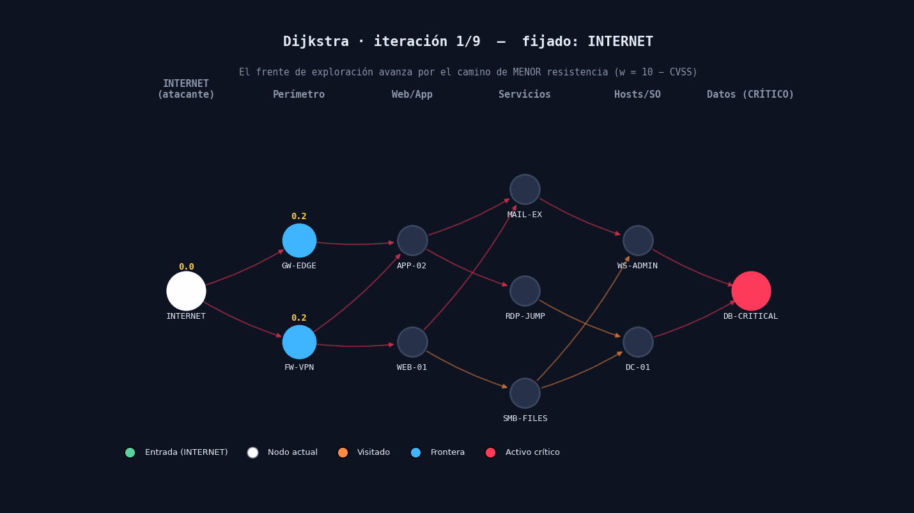

Camino mínimo desde ATTACKER con heap binario. Halla la secuencia de menor resistencia defensiva acumulada hasta el impacto.

| # | Técnica | Nombre | w | acum. |
|---|---|---|---|---|
| 0 | ATTACKER | acceso inicial | — | 0.000 |
| 1 | T1078.003 | Local Accounts | 0.500 | 0.500 |
| 2 | T1606.001 | Web Cookies | 0.250 | 0.750 |
| 3 | T1016.001 | Internet Conn. Discovery | 0.050 | 0.800 |
| 4 | T1550.004 | Web Session Cookie | 0.125 | 0.925 |
| 5 | T1074.002 | Remote Data Staging | 0.050 | 0.975 |
| 6 | T1665 | Hide Infrastructure | 0.050 | 1.025 |
| 7 | T1048.002 | Exfil. cifrada no-C2 | 0.500 | 1.525 |
| 8 | IMPACT | objetivo logrado | 0.010 | 1.535 |